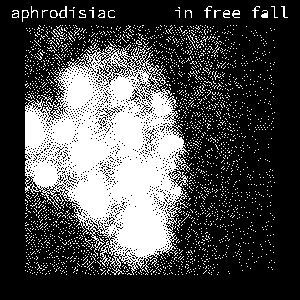

 Seeing that now ex-Neocities' member and current cult leader, Cummy, has made yet another album, and seeing that I now review records like a bellend, I might as well say what I think about it.
The main thing that you will notice is that it sounds like something from Quake. I guess he played Quake so much that he fell in love with the genre of music that filled the levels, after all Trent Reznor himself composed the music for the game.
The tracks do deftly have a coal mine, or even a metal factory vibe to them, with its rather cold and repetitive nature that fills the album. Most of the tracks, apart from the final one, all have the same structure to them; start off slow with only a few noises, bring in a few new notes, build up, then end with only a few notes left, kind of repetitive.
None of the tracks really stand out as a whole, it's not comparable to something like most bands, where you can quickly tell each track apart from another one. Saying that, one of the ways to spot some tracks are by the kind of crap parts, for an example, track three sounds like Charlie Brown at times, and if I was able to spot that, a bloke that has never seen the show, then an American would be able to spot the tune almost at once. Track two is cute I guess, It's more kind of like "oh hey, i'm here, please notice me!"
Even from the start it is forgettable, and that's quite a bad thing. When you start an album, you want to open it with a banger, a song that cements itself onto you. Just think about bands like The Beatles who open 1963's With the Beatles by starting off with "It Won't Be Long", with its flailing guitars and drums.
The last track is quite amazing, as it is nothing but a mess of bad mixing, and on its own you would want to skip it. I'm guessing that Cummy might have taken some influence from bands like Public Service Broadcasting, who take pre-existing audio clips, and place them in their songs, over the top of the new music, and that's fine to take influence from other bands, and people, but the thing is PSB are good at their audio levels, you can make out what the clips from the song are saying. In this song, it's hard to make out from nearly the get go. The same issues kind of effect track six, but it doesn't matter as much due to the clip being under 30 seconds long.
As I said, on its own, it's bad, but with the full context, it seems kind of desperate to say the least, it kind of makes him look shallow, and not able to except his floors.
The record for me sounds quite dull, and isn't really showing me much in the way of anything new. It's alright, I guess, but saying that, the stuff I play most of the time is stuff like heavy metal. But at the same time, metal music kind of has a connection to what ever genre this is.
Is it worth a play? Well it's free, so it has that going for it, and all modern computers have a nice little rubbish bin that you can place the album in anyway.
You can download the record by following the upcoming URLs;
https://mariteaux.somnolescent.net/music/albums/in-free-fall/
https://aphrodisiac.bandcamp.com/album/in-free-fall
You can also see another review of the album here: https://sushipantsu.neocities.org/reviews/iff.html